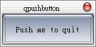

在
前一個範例中，我們將同一個物件的Signal與Slot連接在一起，以達到關閉視窗的目的，在這邊我們將QPushButton的Signal -
clicked()（按下滑鼠後發出）連接至QApplication的Slot - quit()，在按下滑鼠之後，同樣也會關閉視窗。 #include <qapplication.h> 這個程式與之前的範例大同小異，首先QPushButton的定義撰寫於qpushbutton.h中，我們必須將之include進來： #include <qpushbutton.h>
我們宣告一個QPushButton物件quit，並設定其顯示字串： QPushButton quit("Push me to quit", 0);
其中的0表示這是最上層的視窗；接下來這行將Signal與Slot連接在一起： QObject::connect(&quit, SIGNAL(clicked()), &app, SLOT(quit()));
QObject是Qt中許多類別的父類別，是物件模型的核心，它可用來建立Signal與Slots的連接，用於溝通兩個物件之間的狀態，在按下按鈕後， QPushButton物件quit會發出Signal - clicked()，並連接至QApplication物件app的Slot - quit()，告知其關閉視窗。 在這個程式中，按下按鈕或右上的關閉鈕都會關閉視窗：  |
|